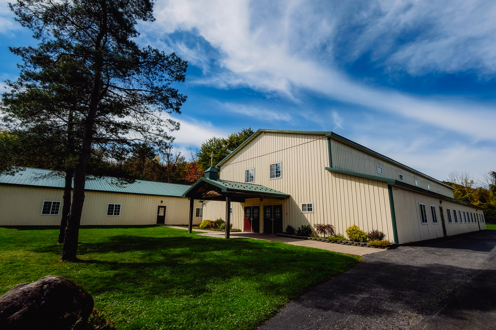
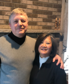

About New Life
Our Mission
Loving Jesus, Living New Life Loving People, Extending Hope
Our Story
Who We Are
New Life Assembly of God is a Bible believing Christian church who holds to the truth that Jesus Christ is the same yesterday, today, and forever. We are a part of the Assemblies of God.
Oh how easy it is to get lost! With our cell phones and iPads, our 24-hour news cycles, there’s virtually nowhere to go for a moment of peace and quiet. That’s where New Life comes in. We provide a holy place of respite in the tumult of life. So come, put aside the cares of the week and find yourself in the presence of God.
Read Our Full Statement of Faith
Pastoral Team
Our Pastors
Leadership at New Life, in their own words from the church.
Keith & Eun Joo Henry
Pastor Keith and Eun Joo Henry have been leading the church for over 25 years.
Steve & Gwendolyn Murawski
Pastor Steve and Gwendolyn Murawski have been ministering to youth for over 30 years.
Mike & Debbie Perez
Pastor Mike and Debbie Perez have been ministering to children for over 35 years. They enjoy reaching children for Jesus through puppets and drama.

What We Believe
Statement of Faith
Our beliefs are rooted in Scripture. New Life Assembly of God is a Bible believing Christian church who holds to the truth that Jesus Christ is the same yesterday, today, and forever. We are a part of the Assemblies of God — learn more at ag.org.
The Scriptures Inspired
WE BELIEVE…The Scriptures are Inspired by God and declare His design and plan for mankind.
The One True God
WE BELIEVE…There is only One True God—revealed in three persons…Father, Son, and Holy Spirit (commonly known as the Trinity).
The Deity of the Lord Jesus Christ
WE BELIEVE…In the Deity of the Lord Jesus Christ. As God’s son Jesus was both human and divine.
The Fall of Man
WE BELIEVE…Though originally good, Man Willingly Fell to Sin—ushering evil and death, both physical and spiritual, into the world.
The Salvation of Man
WE BELIEVE…Every Person Can Have Restored Fellowship with God Through ‘Salvation’ (trusting Christ, through faith and repentance, to be our personal Savior).
Ordinances of the Church
WE BELIEVE…And practice two ordinances—(1) Water Baptism by Immersion after repenting of one’s sins and receiving Christ’s gift of salvation, and (2) Holy Communion (the Lord’s Supper) as a symbolic remembrance of Christ’s suffering and death for our salvation.
The Baptism in the Holy Spirit
WE BELIEVE…The Baptism in the Holy Spirit is a Special Experience Following Salvation that empowers believers for witnessing and effective service, just as it did in New Testament times.
The Initial Physical Evidence of the Baptism in the Holy Spirit
WE BELIEVE…The Initial Physical Evidence of the Baptism in the Holy Spirit is ‘Speaking in Tongues,’ as experienced on the Day of Pentecost and referenced throughout Acts and the Epistles.
Sanctification
WE BELIEVE…Sanctification Initially Occurs at Salvation and is not only a declaration that a believer is holy, but also a progressive lifelong process of separating from evil as believers continually draw closer to God and become more Christ like.
The Church and Its Mission
WE BELIEVE…The Church has a Mission to seek and save all who are lost in sin. We believe ‘the Church’ is the Body of Christ and consists of the people who, throughout time, have accepted God’s offer of redemption (regardless of religious denomination) through the sacrificial death of His son Jesus Christ.
The Ministry
WE BELIEVE…A Divinely Called and Scripturally Ordained Leadership Ministry Serves the Church. The Bible teaches that each of us under leadership must commit ourselves to reach others for Christ, to worship Him with other believers, and to build up or edify the body of believers—the Church.
Divine Healing
WE BELIEVE…Divine Healing of the Sick is a Privilege for Christians Today and is provided for in Christ’s atonement (His sacrificial death on the cross for our sins).
The Blessed Hope
WE BELIEVE…In The Blessed Hope—When Jesus Raptures His Church Prior to His Return to Earth (the second coming). At this future moment in time all believers who have died will rise from their graves and will meet the Lord in the air, and Christians who are alive will be caught up with them, to be with the Lord forever.
The Millennial Reign of Christ
WE BELIEVE…In The Millennial Reign of Christ when Jesus returns with His saints at His second coming and begins His benevolent rule over earth for 1,000 years. This millennial reign will bring the salvation of national Israel and the establishment of universal peace.
The Final Judgment
WE BELIEVE…A Final Judgment Will Take Place for those who have rejected Christ. They will be judged for their sin and consigned to eternal punishment in a punishing lake of fire.
The New Heavens and the New Earth
WE BELIEVE…And look forward to the perfect New Heavens and a New Earth that Christ is preparing for all people, of all time, who have accepted Him. We will live and dwell with Him there forever following His millennial reign on Earth. ‘And so shall we forever be with the Lord!’

Also Part of New Life
Retreat Center & Property
Our 49-acre Conference and Retreat Center provides a place where God’s people can be refreshed and renewed.
Explore the Retreat Center